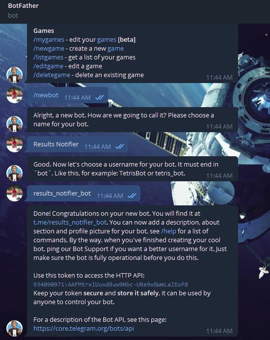
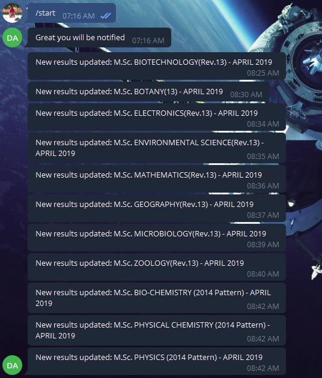

Making a Telegram Bot for My Results
Chat bots are everywhere online - Slack, Discord, facebook messenger.
Even my friend had created an amazing telegram bot which sends a message when the latest episode of your favourite anime is released.
Inspired by his bot, I decided to make my own telegram bot.
I had then recently given my final university exams. The university releases provisional results online. As I wanted to create the bot, I decided why not a notifier bot which sends me a message when the latest results are uploaded instead me refreshing the website obsessively.
My first step was to track the changes on the website. Since the website was static, I decided to track the changes as follows.
- Save a copy of the page.
- For every one minute, save another copy of the site.
- See if there are any differences. If there are any, then print a message and update the original copy.
Yeah! I know, pinging every minute is too much but like I said, I was obsessed.
To test the code, I created a local page to track changes on. When I was satisfied with it, I decided to integrate it with telegram.
After searching online and consulting with my friend, I found out that to create a bot I needed to first get an API key. For that, all ones needs is to open a chat with Bot Father in Telegram.

Telegram provides a library to create a bot using python. It can be installed as follows.
pip install python-telegram-bot
I ran the sample code to check if it was working.
It worked! It was now time to integrate the two. Here, I faced a couple of roadblocks. I had two loops running: one for pinging the website and another that telegram uses for polling. That meant I needed a way to run both the loops in parallel. I decided to use mutiprocessing for running both the loops.
The start function would add a user’s chat id to the list which would be later used to send message if any change in the website occurred.
Except! When I ran the code, It did not send any notification of an update. After spending quite some time debugging, I discovered a rookie mistake. I was using multiprocessing insetad of multithreading for running the loops. Each process has a different stack memory. So, a list made in one loop (running on a different process) cannot be accessed from another loop. Hence, I had to switch from multiprocessing to multithreading because threads share the same address space.
Finally, after ironing out the wrinkles I deployed it on Heroku. And it worked!........for a day. It sent updates of the results uploaded for that day but then stopped sending any update. This took me a couple of days to figure out why.
Again, an avoidable problem. Had I read the Heroku documentation I would have known that Heroku resets the applicaiton to its last commit once a day. This means that all variables in the memory and any files generated would be deleted.
Another note on not reading the documentation: Once I was done with the use of my bot I found out that even telegram provides presistent storage.
🤷
The solution was to store and read from a presistant database. But I decided to just pickle my cchat id and the telegram group of my friends into a file and commit it.
Because hard-coding is too mainstream.
That way the chat ids would remain presistant.
Thats the story of my very professional telegram bot. Although, I did learn quite a lot from this project.

The code is available here.
Thanks for reading 😎